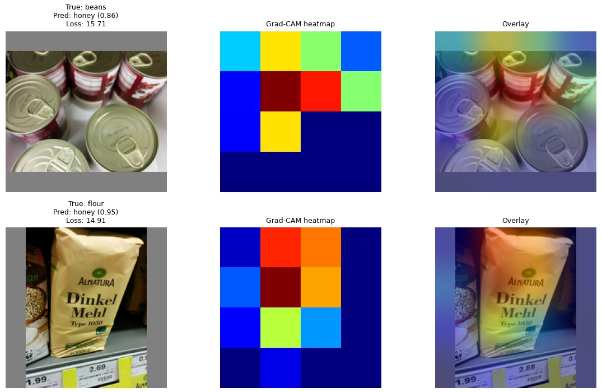

Grocery product classification with CNNs
Classifying photos of grocery products into 25 categories (Freiburg Groceries). I compared a convnet built from scratch, developed step by step from a baseline through augmentation to residual blocks, with a fine-tuned EfficientNetV2B0.
- 82.2 % test accuracy with the fine-tuned EfficientNetV2B0, against 64.6 % for the from-scratch residual CNN
- Regularisation alone doubled validation accuracy over the overfitting baseline
- Grad-CAM shows the from-scratch model relies on colour and shape, not texture